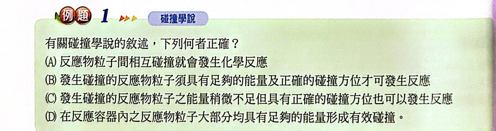
看答案與詳解收起
答(B)
解
- (A) ✗ 碰撞不一定反應
- (B) ○ 要能量足夠＋方向正確
- (C) ✗ 能量不足一定不反應
- (D) ✗ 只有極少部分粒子能量足夠
反應粒子必須互相碰撞才能反應（碰撞才可能讓原子重新排列），但碰撞不一定起反應，只有極少數碰撞會引起反應，稱為有效碰撞。
(1) 粒子要有足夠的能量
- 一定溫度下，氣體分子有一定的平均動能，但每個分子動能不一定相同，大多數接近平均值。
- 發生反應所需的最低動能稱為低限能（Ea）；只有動能在 Ea 右邊（斜線部分）的分子碰撞才有效。
- 例：空氣中 O2、N2 碰撞頻率很高，但常溫下動能不夠，一整年也測不到 NO2。
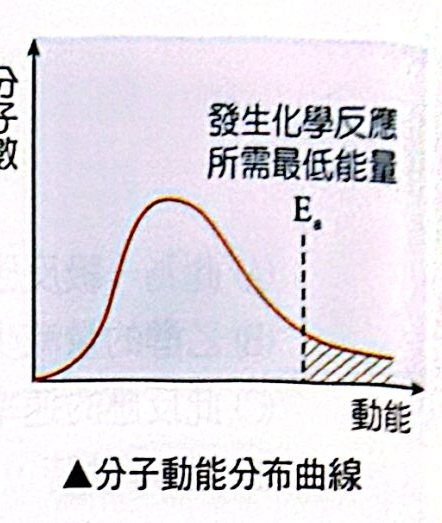
(2) 碰撞方向要有利（位向正確）
- NH3 ＋ HCl → NH4Cl：HCl 的 H 端要撞向 NH3 的 N（孤對電子） 才有效。
- CO ＋ NO2 → CO2 ＋ NO：CO 的 C 要撞向 NO2 的 O。
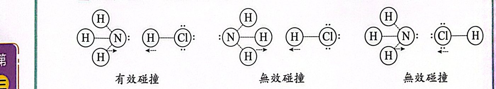
反應粒子能量足夠且方向正確時，碰撞過程中短暫結合成一個能量極高、極不穩定的結合物，稱為活化複合體。
- 是「新鍵部分形成、舊鍵部分破壞」的過渡狀態。
- 形成後有兩種去向：分解成生成物，或分解回原來的反應物。
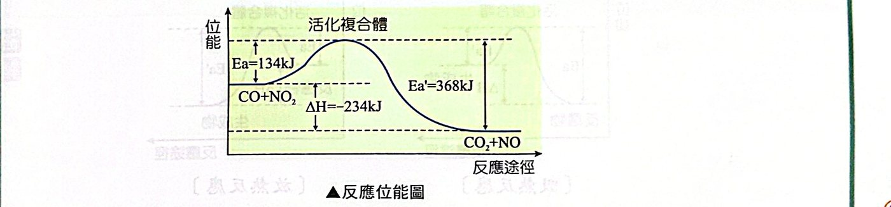
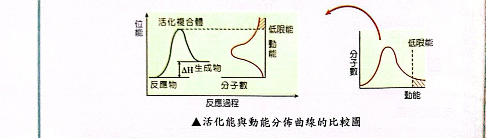
ΔH ＝ Ea（正）− Ea'（逆）
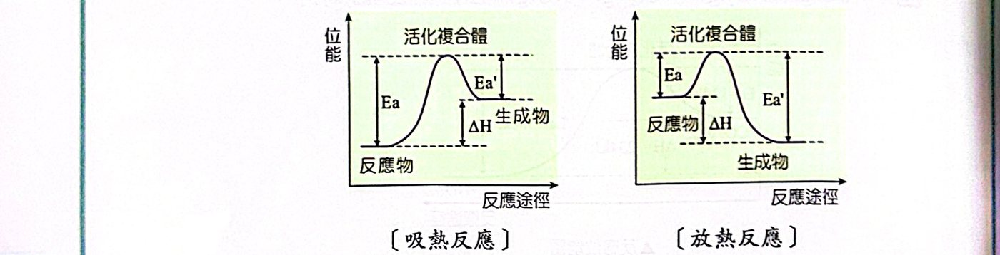
化學反應多半不是一步完成，而是經由一連串基本反應（步驟）完成；把所有步驟依序列出就是反應機構，必須由實驗測得。
例：H2O2 ＋ 2I− ＋ 2H＋ → I2 ＋ 2H2O
- 若一步完成，要 5 個粒子同時有效碰撞，機率極低。
- 實驗測得的機構：
- H2O2 ＋ I− → OH− ＋ HOI（慢）
- H＋ ＋ OH− → H2O（快）
- HOI ＋ H＋ ＋ I− → I2 ＋ H2O（快）
例：2H2O2 →(I−) 2H2O ＋ O2
- 步驟 I：H2O2 ＋ I− → H2O ＋ IO−（慢）
- 步驟 II：H2O2 ＋ IO− → H2O ＋ O2 ＋ I−（快）
- 步驟 I 為速率決定步驟 ⇒ r ＝ k[H2O2][I−]
- 位能圖上活化能較高的那一步就是慢步驟；IO− 是中間產物（先生成後消耗）。
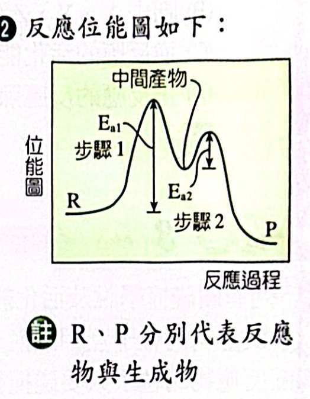

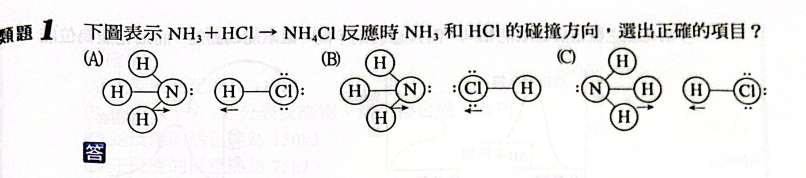
HCl 的 H（帶部分正電）要撞向 NH3 中 N 的孤對電子，才能形成 N−H 鍵：(A) 的 H−Cl 以 H 端朝向 N ✓
(B) Cl 端朝 N；(C) NH3 的 H 端朝向 HCl ✗
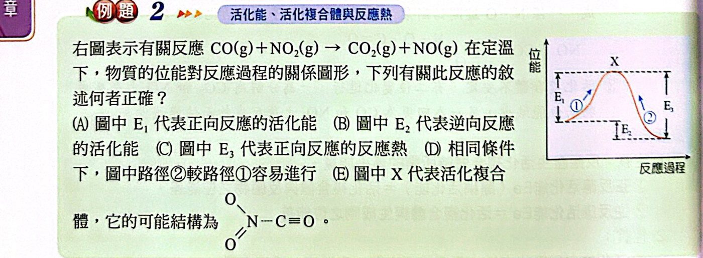
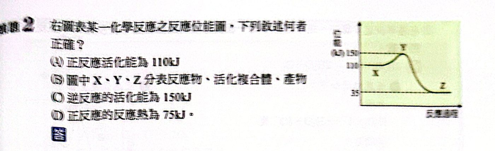
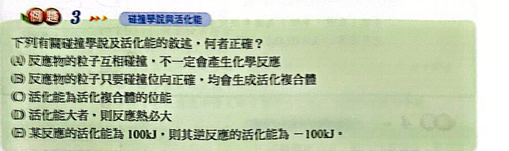
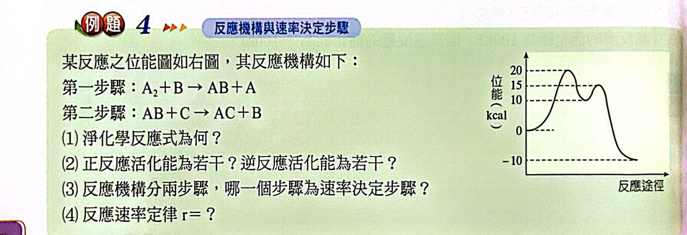
(1) 兩步驟相加，B（催化劑）與 AB（中間產物）消去：A2 ＋ C → AC ＋ A
(2) 讀圖：反應物 0、最高點 20、生成物 −10
正反應活化能 ＝ 20 − 0 ＝ 20 kcal；逆反應 ＝ 20 − (−10) ＝ 30 kcal
(3) 第一步驟活化能 20 − 0 ＝ 20；第二步驟 15 − 10 ＝ 5 ⇒ 第一步驟較慢
(4) 速率決定步驟 A2 ＋ B → AB ＋ A ⇒ r ＝ k[A2][B]
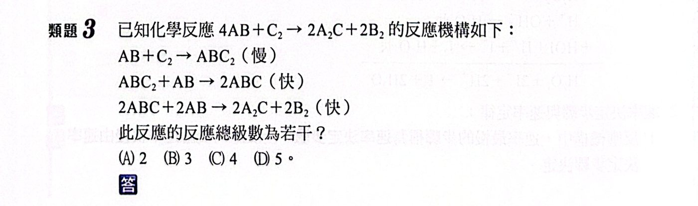
速率決定步驟（慢）：AB ＋ C2 → ABC2 ⇒ r ＝ k[AB][C2]，總級數 2。
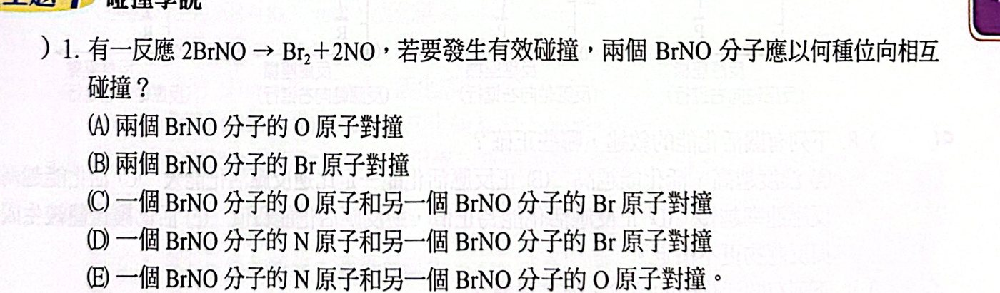
2BrNO → Br2 ＋ 2NO：要生成 Br−Br 鍵，兩個分子的 Br 原子要對撞。
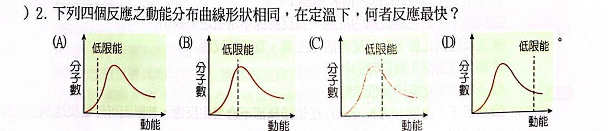
曲線形狀相同，低限能愈低，右側能量足夠的分子愈多，反應愈快 ⇒ (A)。
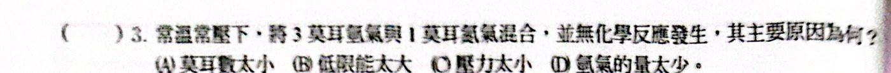
常溫下分子動能遠低於低限能（活化能太大），幾乎沒有有效碰撞。
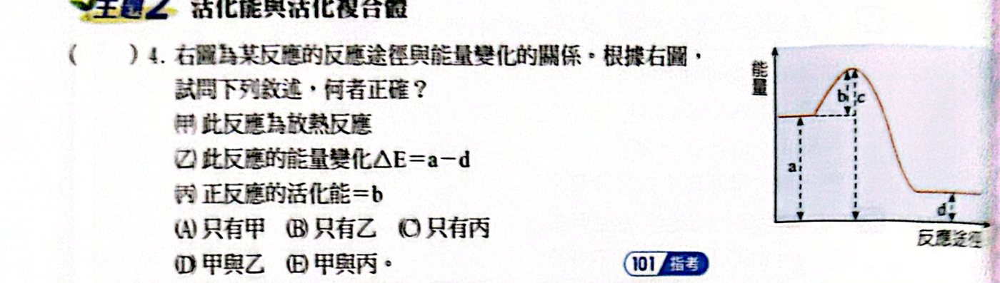
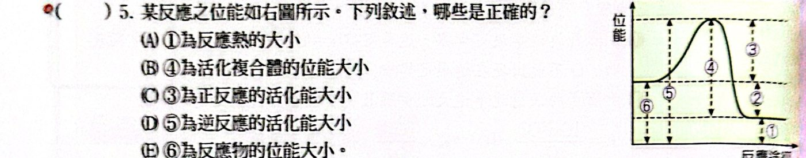
只有 (C)(E) 對應正確。
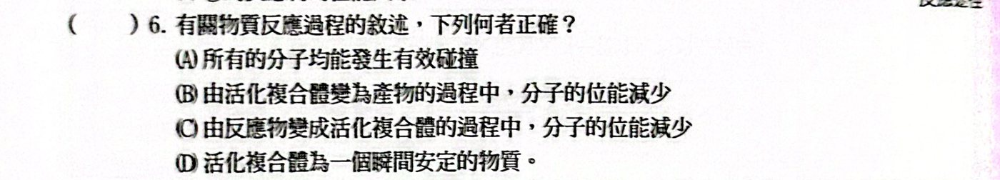
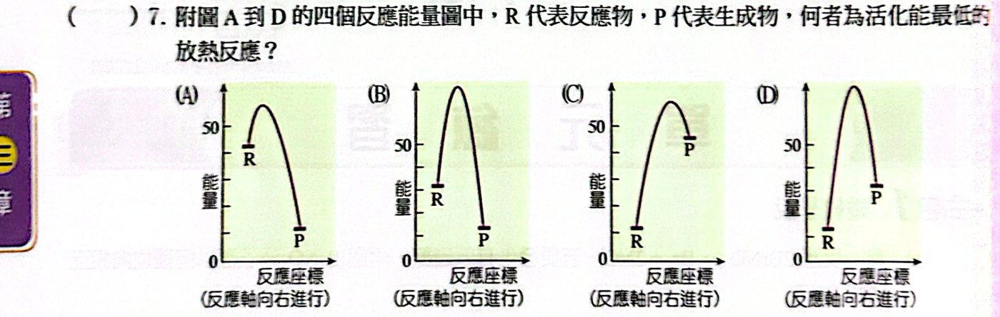
放熱：P 低於 R ⇒ (A)(B)。
(A) R 約 45、最高點約 60，活化能約 15；(B) R 約 25、最高約 65，活化能約 40 ⇒ (A)
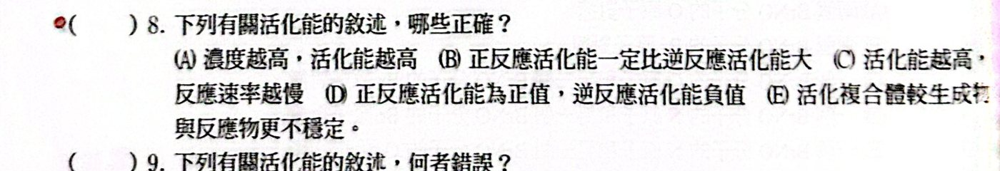
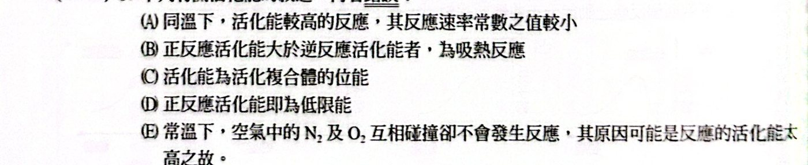
活化能是活化複合體與反應物的位能差，不是活化複合體的位能本身。
(D) 講義說活化能的數值與低限能相同，可接受。
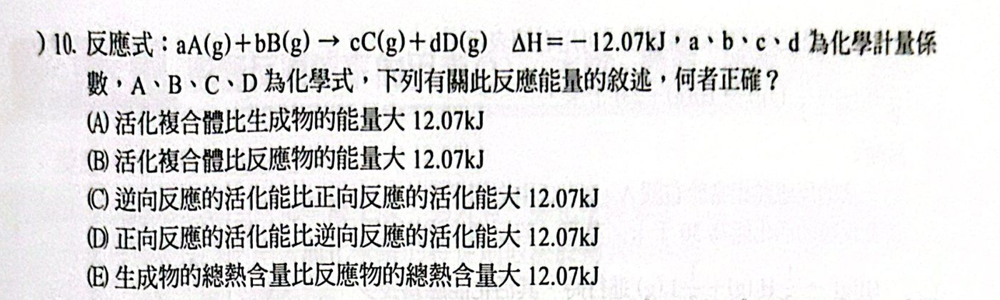
ΔH ＝ Ea − Ea' ＝ −12.07 kJ ⇒ Ea' − Ea ＝ 12.07 kJ，逆反應活化能較大。
(A)(B) 無法得知活化複合體的能量；(E) 放熱反應生成物較低。
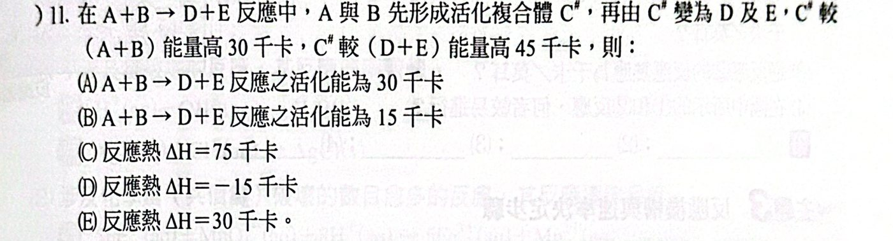
正反應活化能 ＝ C# − (A＋B) ＝ 30 千卡
ΔH ＝ Ea − Ea' ＝ 30 − 45 ＝ −15 千卡
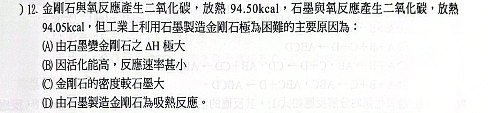
石墨 → 金剛石只吸熱 0.45 kcal，ΔH 很小；困難的原因是活化能極高，反應速率極小。
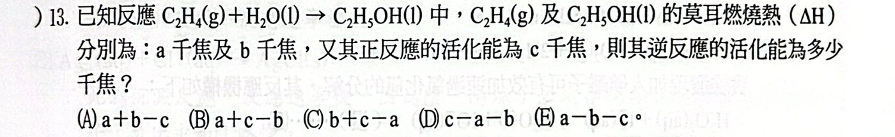
ΔH ＝ 反應物燃燒熱總和 − 生成物燃燒熱總和 ＝ a − b（H2O 的燃燒熱為 0）
Ea' ＝ Ea − ΔH ＝ c − (a − b) ＝ b ＋ c − a
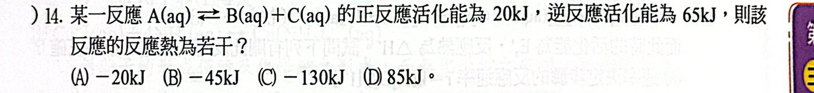
ΔH ＝ 20 − 65 ＝ −45 kJ
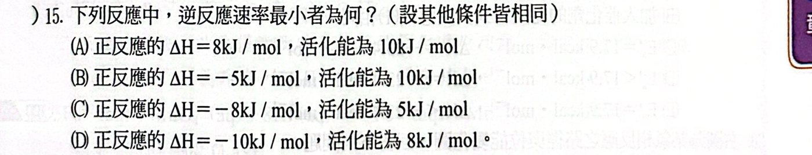
逆反應活化能 Ea' ＝ Ea − ΔH：
(A) 10 − 8 ＝ 2 (B) 10 ＋ 5 ＝ 15 (C) 5 ＋ 8 ＝ 13 (D) 8 ＋ 10 ＝ 18（最大，逆反應最慢）
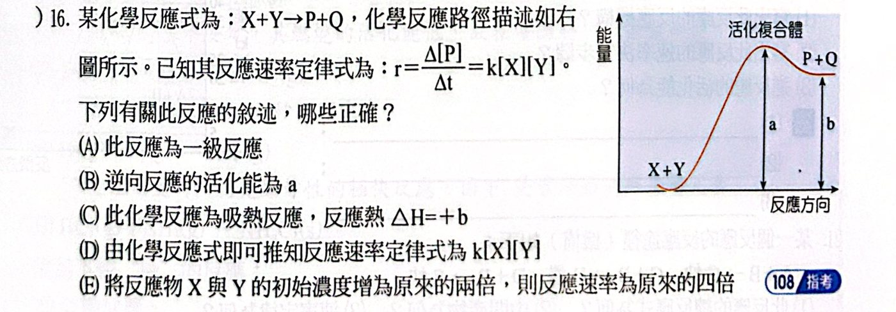
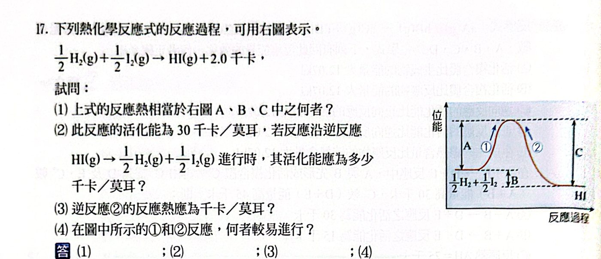
(1) 反應熱 ＝ 反應物（½H2＋½I2）與生成物（HI）的差 ⇒ B
(2) Ea' ＝ Ea − ΔH ＝ 30 − (−2.0) ＝ 32
(3) 逆反應吸熱：＋2.0 千卡/莫耳
(4) ① 活化能 30 ＜ ② 活化能 32 ⇒ ①較易進行
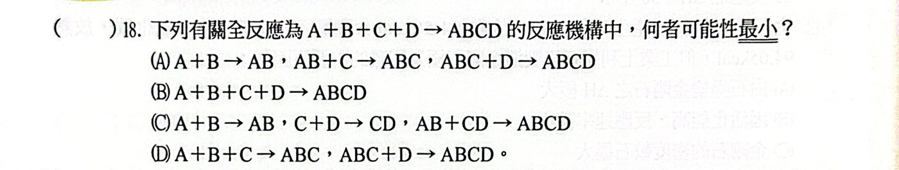
A ＋ B ＋ C ＋ D 一步完成需四個粒子同時有效碰撞，機率極低。
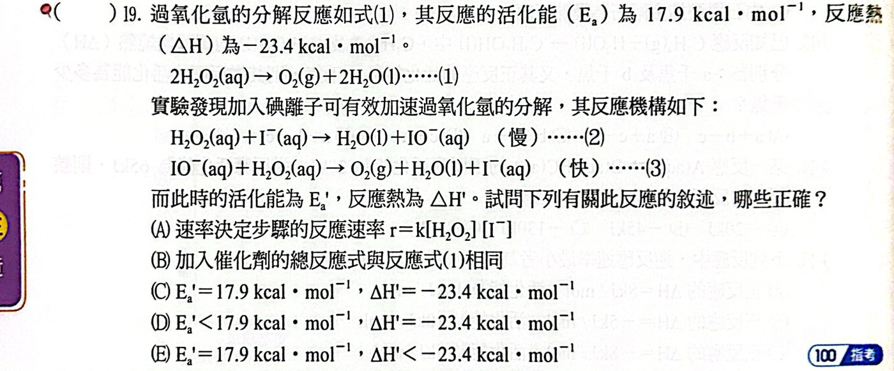
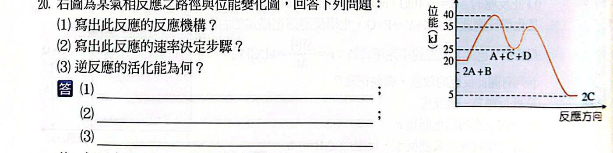
(1) 由圖：2A＋B（20）→ 中間 A＋C＋D（25）→ 2C（5）
- 步驟一：A ＋ B → C ＋ D
- 步驟二：A ＋ D → C
（總反應 2A ＋ B → 2C，D 為中間產物）
(2) 步驟一活化能 40 − 20 ＝ 20 kJ；步驟二 35 − 25 ＝ 10 kJ ⇒ 步驟一為速率決定步驟
(3) 逆反應活化能 ＝ 最高點 40 − 生成物 5 ＝ 35 kJ
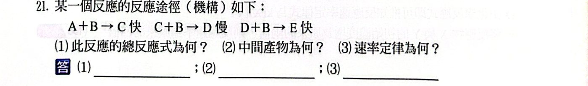
(1) 三式相加消去 C、D：A ＋ 3B → E
(2) 先生成後消耗：C、D
(3) 慢步驟 C ＋ B → D：r ＝ k'[C][B]；C 由快速平衡 A ＋ B ⇌ C 得 [C] ∝ [A][B]
⇒ r ＝ k[A][B]2